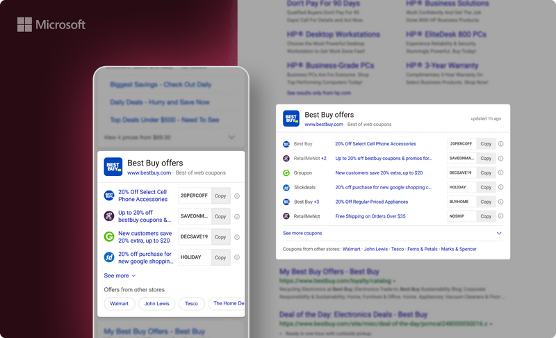

Redesigned the Offers answer on Bing Search through optimized information and layout design while making data-driven decisions. The project involved rethinking how coupon and deal information is presented within search results.
Achieved unprecedented user engagement on the answer.
Owned the redesign end-to-end — from auditing existing patterns and analyzing scan behavior to designing new layouts and running A/B tests to validate improvements.